CanSat Hungary 2024
The Seraph team was formed for the CanSat Hungary 2024 competition. This page collects what we built and what happened during the competition.
What is a CanSat?
A CanSat is a "satellite" with the size and shape of a soft drink can. Students have to fit into this small volume everything a real satellite has: power, sensors and radio communication. The finished CanSat is carried by a rocket to about one kilometre (or dropped from a platform, a drone or a captive balloon), and it does its job while descending.
Every team has two missions. The primary mission is the same for everyone: measure air pressure and air temperature at least once a second and send the data down by radio. The secondary mission is chosen by the team.
Our CanSat
We soldered the sensors and the microcontroller onto a circuit board, and a 3D-printed shell protected everything during launch and descent. The electronics were powered by a LiPo battery that lasted at least four hours; the camera had its own battery. A parachute slowed the descent.
| Air pressure and temperature | BMP280 |
|---|---|
| Carbon dioxide | SCD30 (one reading every 2 seconds) |
| Camera | mini HD camera, facing down |
| Positioning | GPS module for finding the CanSat after landing |
| Data storage | SD card |
| Radio | data sent to the ground station every second |


Primary mission
The BMP280 sensor measured air pressure and temperature during the descent. The data was saved to the SD card and also sent to the ground station by radio every second.
Secondary mission: CO₂ and vegetation
Our question was whether the carbon dioxide level of the air is related to how much vegetation there is on the ground below. To find out, we measured two things at the same time.
The SCD30 precision CO₂ sensor gives a reading every two seconds. It works by infrared absorption: a special-wavelength infrared LED and a detector measure how much light the CO₂ absorbs. This makes it fairly fast and reliable, and it is easy to read over the I2C bus. We started from the assumption that carbon dioxide (molar mass 44 g/mol) is heavier than air (29 g/mol on average), so its concentration may decrease with height. That was our starting hypothesis. We now know that the air in the lower atmosphere is constantly mixing, so CO₂ does not settle into layers by molar mass; differences near the ground are caused by sources and sinks at the surface (such as vegetation or traffic) and by air movement.
The camera at the bottom of the CanSat recorded video throughout the descent, giving us images from different heights. We could estimate the height from the air pressure. The share of green areas (trees, bushes, grass) in the images was determined by an artificial intelligence that we trained ourselves.
We collected the training data by hand: on RGB colour picker websites we looked at random colours and decided by eye whether each one counted as green. We collected 680 samples in total. After testing, the accuracy was about 91.9%. Since we deliberately gave the model more colours that occur in nature, we expected even better accuracy on real footage.
Our goal was to show that the amount of CO₂ is related to the amount of vegetation below it. We also wanted to draw attention to deforestation and to the growing amount of greenhouse gases.

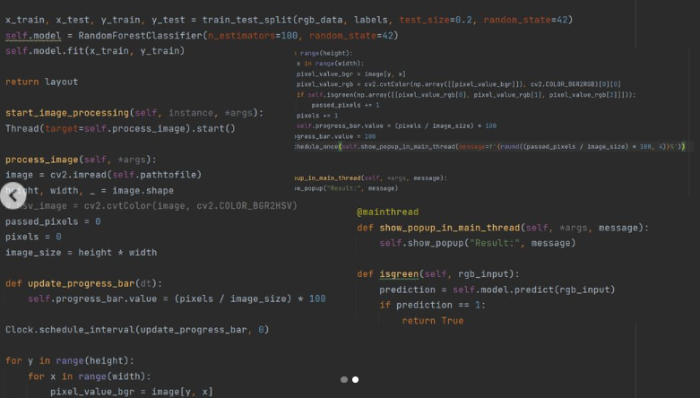
The competition
In March 2024, at a meeting codenamed MWAIN ("Meeting without an interesting name"), we received the finalist medal, which meant we had qualified for the CanSat Hungary final. At the end of March we submitted the Pre-Launch Report (PLR). By then the main board was finished; we checked the structure with test throws in Palotakert, and the parachute in a drop test.
At the final on 6 April 2024 the team received the Scientific Award (a special prize) and an invitation to the Hungarian launch of ESA's ESERO programme. Report on the final by Űrvilág (in Hungarian) · MANT (in Hungarian) · Spacejunkie (in Hungarian) · ESA: photo of the finalists · Our school's article (in Hungarian)
In May 2024 we also presented the project at the opening of ESERO Hungary, together with our school's CanSat team from the previous year, PreSat. ESA's article on the launch of ESERO Hungary
Our CanSat work became a TDK paper (Scientific Students' Associations) at MATE. At the institutional TDK conference on 20 November 2024 we won 2nd place in the Materials, Industrial Technology and Mechatronics section (Máté Magó, Anna Horel, Zsigmond Csaba). This qualified us for the Technical Sciences Section of the 37th OTDK, where we presented the work at the University of Debrecen, Faculty of Engineering, on 23–25 April 2025.
Flight results
At the final the CanSat was launched twice, both times to about 1 km.
- Descent: on the first flight the CanSat got caught in the rocket's parachute, so it came down at an average of 5.9 m/s and landed after 2 minutes 28 seconds. On the second flight our own parachute slowed it down: it descended at 6.6 m/s and landed after 2 minutes 18 seconds, within the planned range of 6–7 m/s.
- Radio: the link was stable throughout and we received all the data; even the weakest signal stayed within the receiver's sensitivity limit.
- Acceleration: the highest measured value was 3.5 g on the first flight and 2.2 g on the second.
- Temperature: the three temperature sensors agreed well; the one closer to the camera read slightly warmer.
- CO₂: the sensor follows changes with a delay of about half a minute, and the values measured during the descent (about 477–492 ppm) did not change the way we expected. The measurement did not confirm our hypothesis.
- Image analysis: in the camera footage the program found about 68% and 59% green area. It also produces a black-and-white map in which the non-green areas you can walk on, such as roads and paths, stand out clearly.
- From the GPS data we redrew the descent path in Google Earth.


Documentation
We wrote several reports during the competition. The most detailed one was the Critical Design Review (CDR), which describes the state of 17 February 2024. The sections below summarise it and the final documentation written after the competition; where the two differ, we give the final value.
Structure
We designed the shell in Autodesk Fusion 360. It consists of two half-cylinders with rails on their sides, so they slide together precisely. At the bottom of one half there is a 1 cm hole for the camera lens. The wall, base and lid are 3 mm thick, which proved strong enough in the drop tests. The test shells were printed in white PLA; the final version was made of bright red PLA to make it easier to find after landing.
The finished CanSat was 110 mm tall, 66 mm in diameter, and had a mass of 305 g (the competition required 300–350 g).
Electronics and power
The controller was an Adafruit Feather M0 Adalogger, which has a built-in SD card reader and can be programmed in the Arduino IDE. The sensors: BMP280 (air pressure and temperature), MPU6050 (acceleration), SCD30 (CO₂) and a NEO-7M GPS. The camera was an SQ11 mini HD camera with its own battery and SD card.
At first we used RFM69HCW radio modules, but data transmission was not reliable beyond 500 metres, so we switched to RFM95W LoRa modules in the 868 MHz band. Data was sent every second.
Together, the final components drew about 130 mA, with a peak power of about 433 mW. With this load the 3.7 V, 1200 mAh LiPo battery lasted roughly 10 hours, well above the approx. 4 hours planned for measuring.
Parachute and descent
The parachute is roughly a flat octagon with a radius of about 15.8 cm and a hole in the middle for a more stable descent. Calculating with a cautious drag coefficient of 1.1 gave a descent rate of about 7 m/s. We tested its strength with 9 litres of water, almost twice the required 50 N.
We did drop tests in the school hall (2 floors), in the university hall (4 floors) and finally from a 10-storey building in Palotakert, Gödöllő. From the change of the height calculated from air pressure we measured an average descent rate of about 7.5 m/s, with an error of about 7%. This fits the competition's 5–12 m/s requirement; the estimated flight time was about 130 s.
Sensor calibration
We compared the BMP280's pressure readings with a Greisinger GTD 1100 instrument in a sealed jar with the pressure lowered by a vacuum pump: the offset was only 3 Pa. We checked the temperature between −20 °C and 25 °C (freezer, fridge, room temperature) and found an offset of −1.5 °C, which the program corrects.
For CO₂ we first tried an Adafruit CCS811, but it did not measure reliably below 600 ppm. We compared the SCD30 in a sealed aquarium with an ALMEMO 2590 data logger and a certified CO₂ sensor borrowed from the environmental engineering lab of MATE. Its sensitivity matched the reference, and the program corrects the 213 ppm offset.
To recognise vegetation, we used an Ocean Optics USB2000+ spectrometer (400–1050 nm) to record the spectrum of natural light and of light reflected from different plants. Chlorophyll causes a characteristic "valley" in the spectrum of every leaf, and the image analysis was built on this.
Ground station
The ground station was a laptop with an Arduino Uno and the same RFM95W radio as in the CanSat. The Arduino only passed the data on; processing ran on the laptop, for example with Excel's Data Streamer add-in, which puts the values into a table and a chart live.
Costs and outreach
The components, printer filament, cables and parachute material cost about 127 euros in total (the competition limit was 500 euros).
We posted about our progress on Instagram, and one of our short videos reached 2,500 views. At school we organised a programme: our 3D printer was working in the middle of the main hall, by our estimate 300–400 students walked past it, and we gave a talk to those interested.
The CanSat's program code and the image analysis program are public: github.com/mateking0/Seraph-Cansat.
Photos
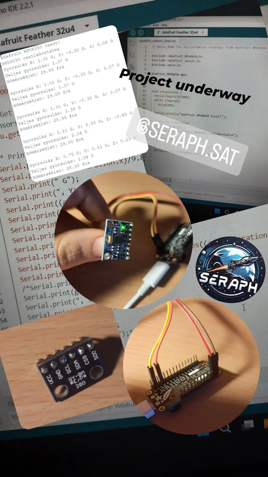
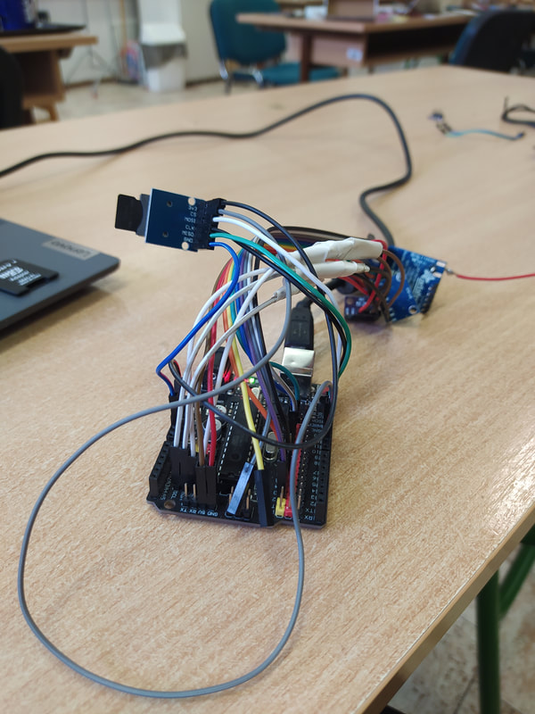
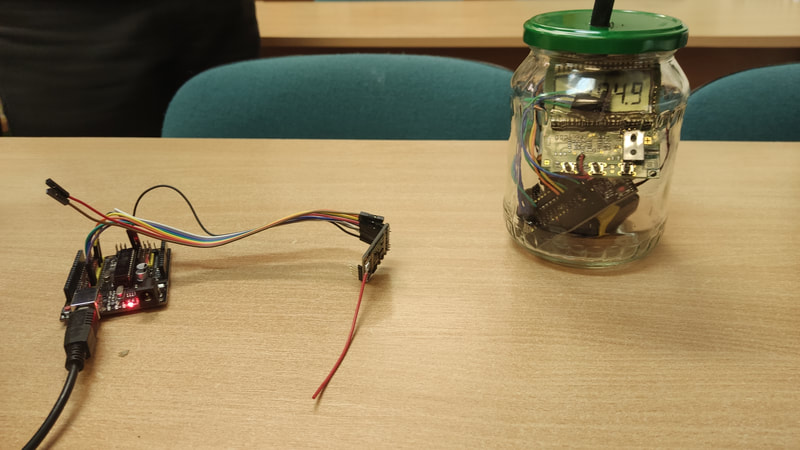
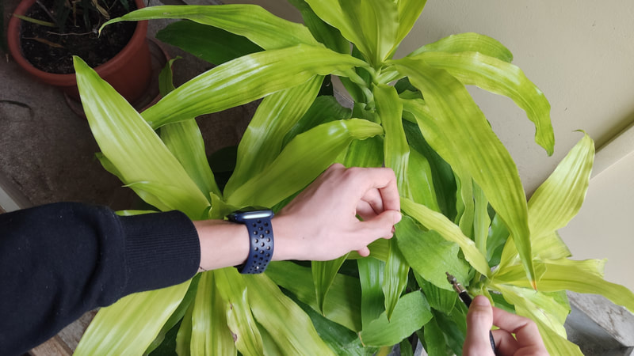
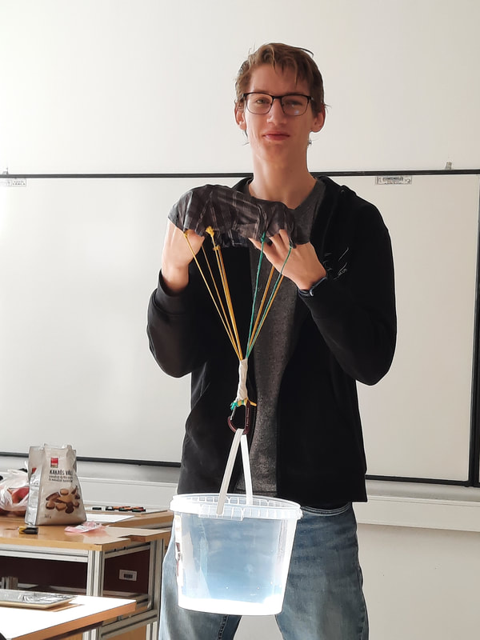
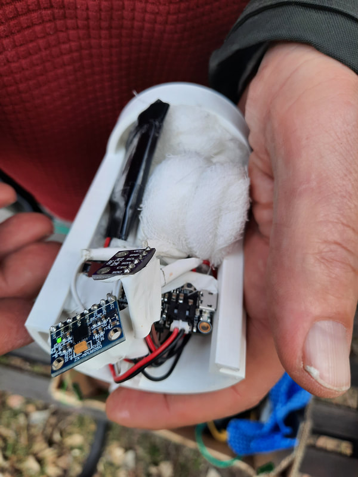
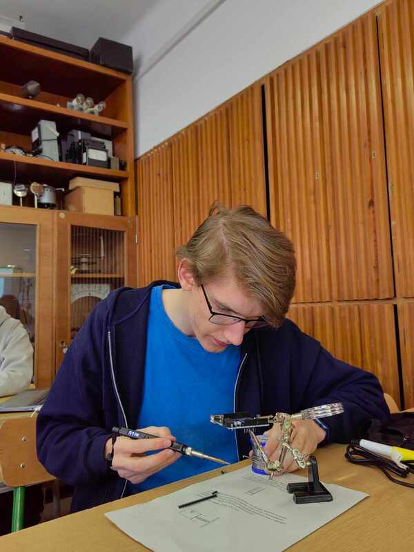
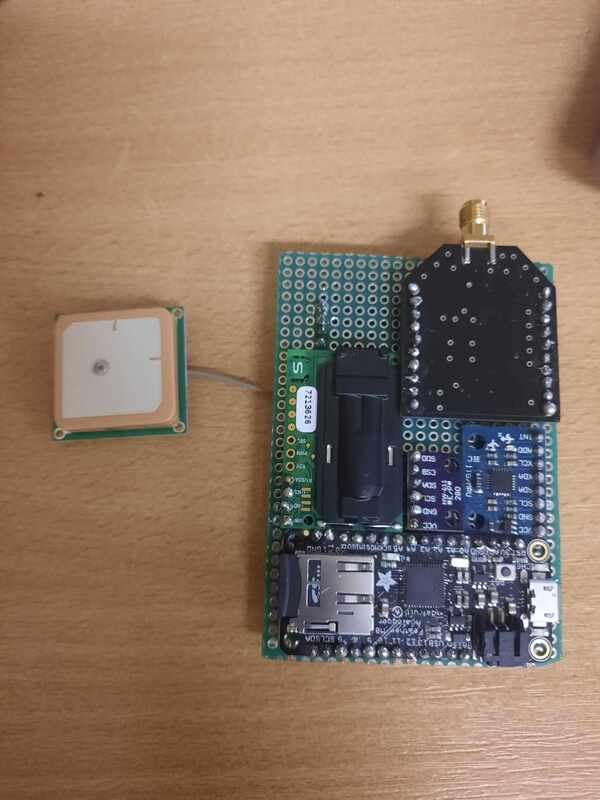
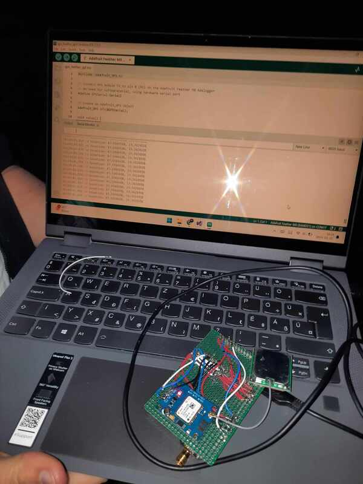
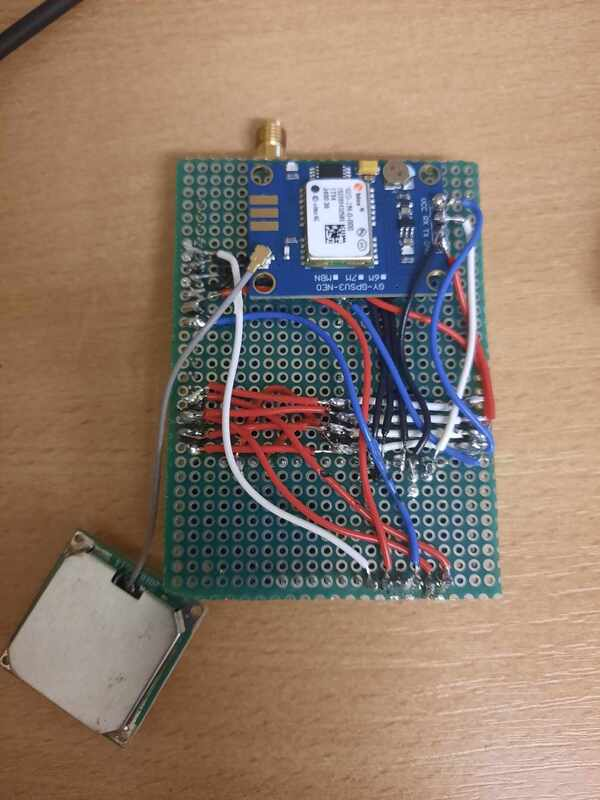
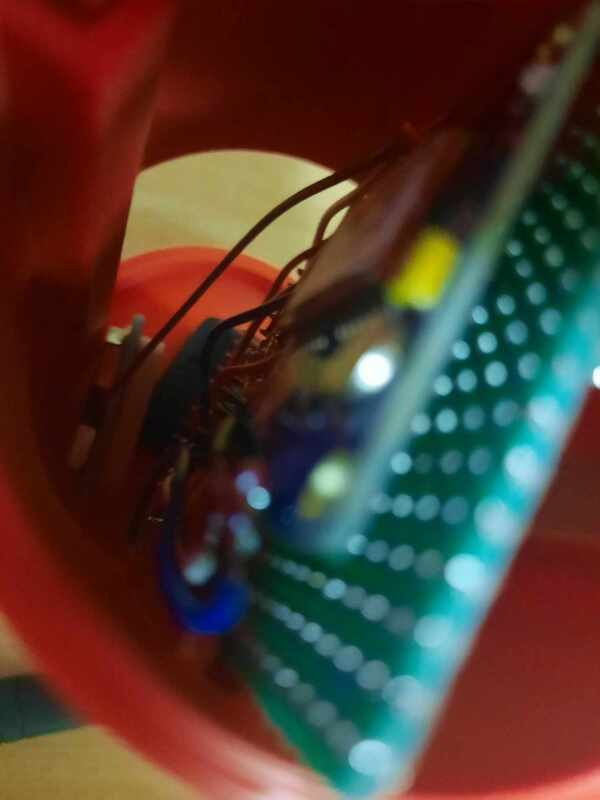
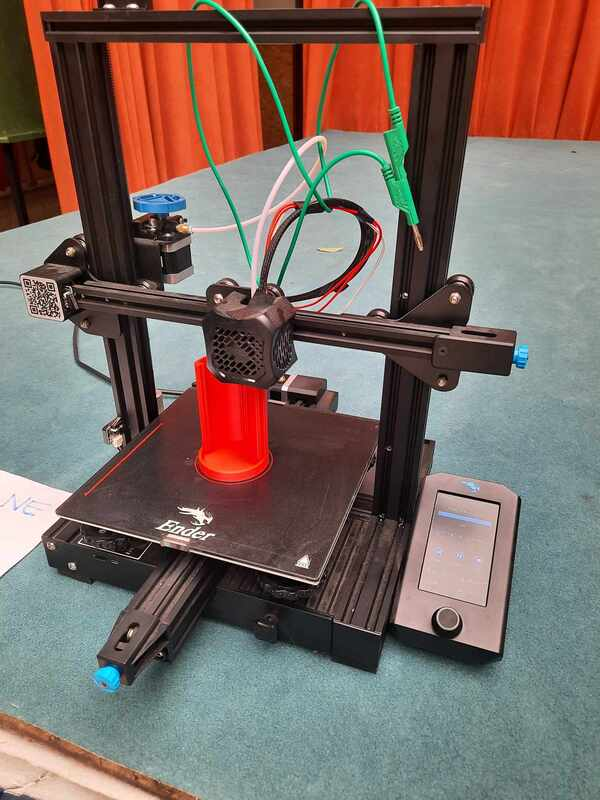


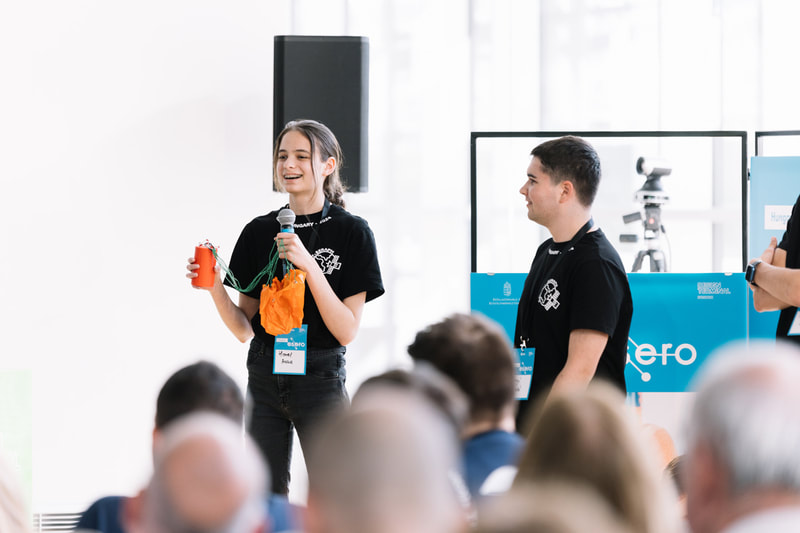
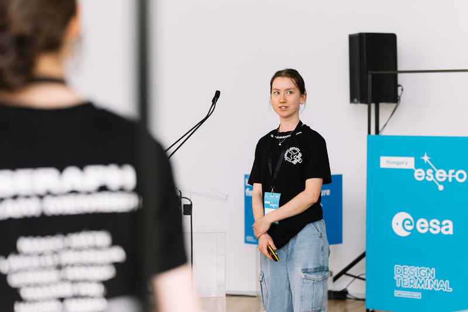
Photos of the ESERO opening: Design Terminal.
Supporters of the CanSat project
The CanSat project was supported by our school, the Premontrei Szent Norbert Gimnázium in Gödöllő, and by the Hungarian University of Agriculture and Life Sciences next to it. In the university's workshop we could 3D print, solder and calibrate our sensors with their instruments. The logos are on the home page.